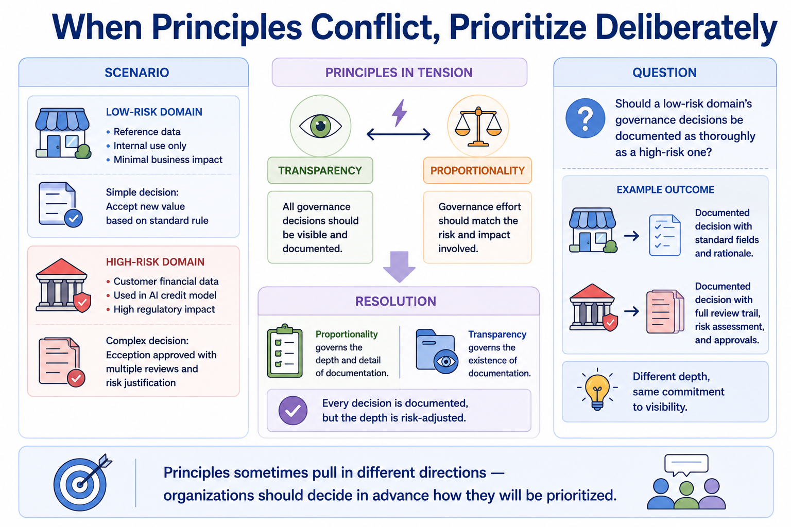
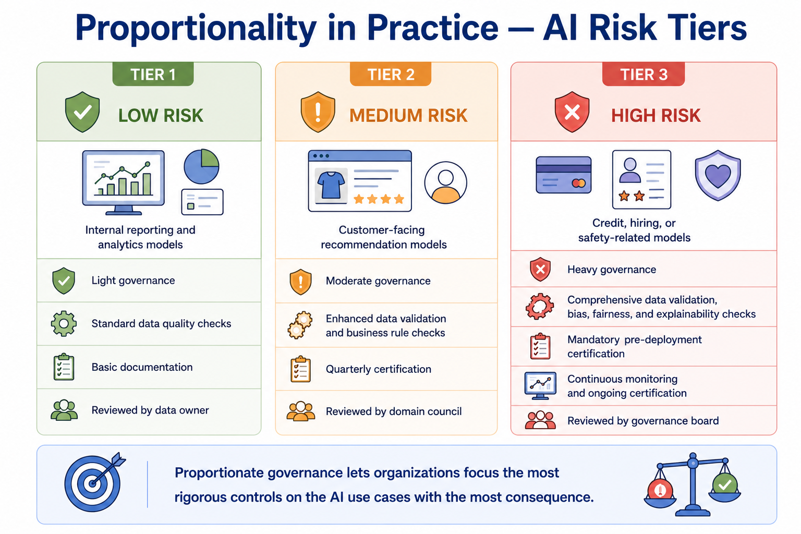
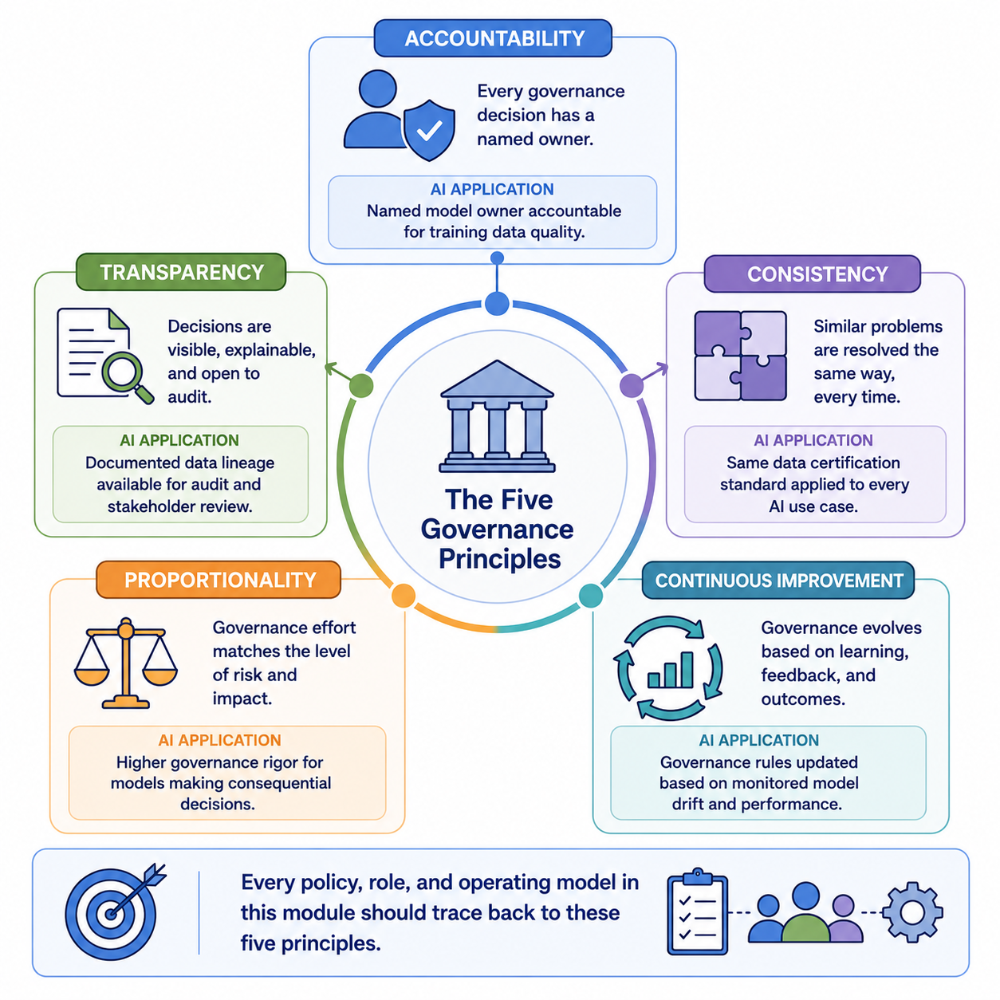

Governance Principles
Module support notes
Using Principles to Resolve Governance Disputes
Governance principles are not always perfectly compatible in every situation, and organizations benefit from deciding in advance how conflicts between them will be resolved. A useful approach is to treat accountability and transparency as non-negotiable baselines that apply everywhere, while letting proportionality determine the intensity of consistency and documentation requirements for any given domain.
This avoids ad hoc debates every time a new governance question arises — and it gives stewards and domain owners a principled basis for resolving disputes without escalating every edge case to senior leadership.
Tip
When principles appear to conflict, use proportionality as the tiebreaker for scope and intensity — but never let it override accountability and transparency entirely. A low-risk domain may require lighter documentation depth, but it still requires documented ownership. The principle hierarchy should be explicit in the governance charter so every stakeholder knows how to resolve conflicts without needing a ruling.

Principles as the Basis for AI Risk Tiering
The proportionality principle is most visible in how organizations tier their AI use cases by risk and apply governance rigor accordingly. This tiering approach — increasingly common in organizations subject to emerging AI regulation — allows governance teams to focus their most intensive review processes on high-consequence models while keeping low-risk analytical work moving without unnecessary friction.
- Tier 1 — Low Risk: internal reporting and analytics models; light governance, no pre-deployment certification required
- Tier 2 — Medium Risk: customer-facing recommendation models; moderate governance with quarterly certification reviews
- Tier 3 — High Risk: credit, hiring, or safety-related models; heavy governance with mandatory pre-deployment certification and continuous monitoring
Warning
Applying the same governance intensity to every AI use case regardless of risk creates two problems: it buries high-risk models in the same review queue as low-stakes analytics, and it creates so much governance overhead for routine work that teams begin routing around the process. Proportionate governance is not less rigorous — it is more intelligent about where rigor is applied.

Every policy, role, and operating model in this module should trace back to these five principles — they are the foundation that keeps governance coherent as the program scales.
